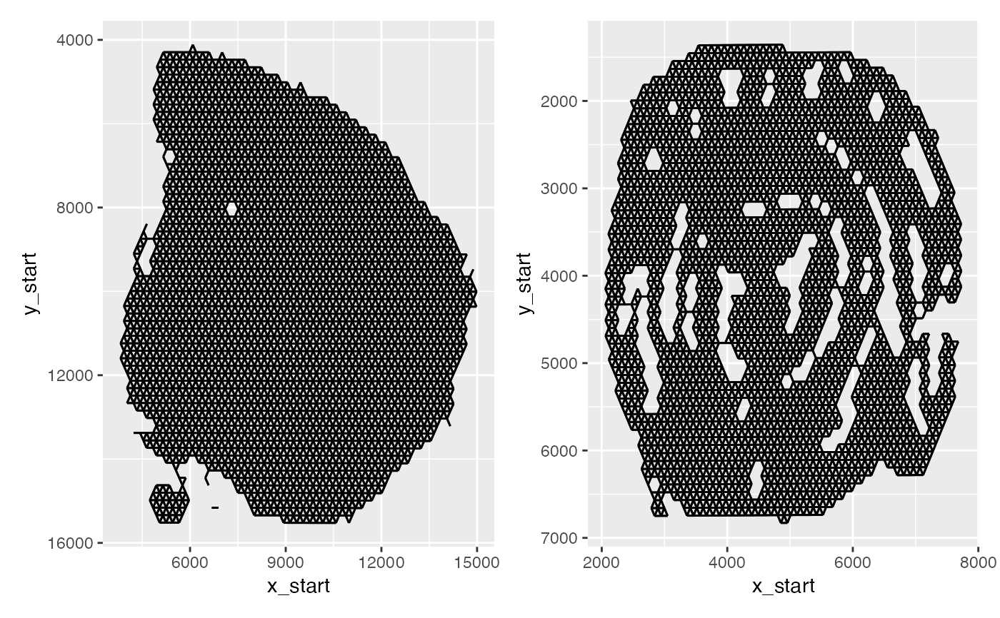
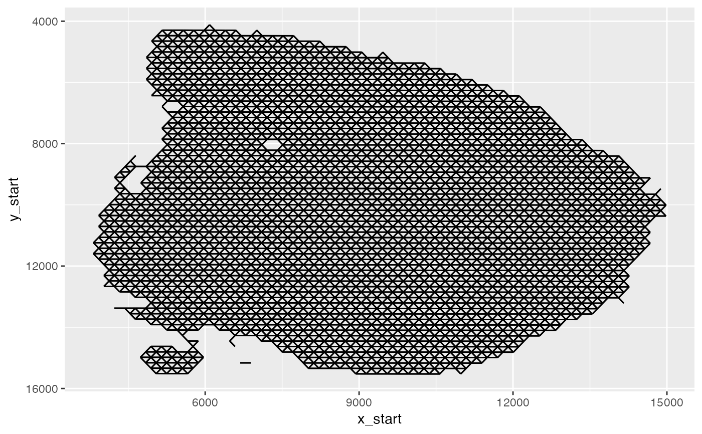

Create Spatial Networks
get-network.RdCreate spatial networks from spatial coordinates. The spatial networks are provided in a long format which holds information about spot neighbors, their center-to-center distances and positions.
Usage
GetSpatialNetwork(object, ...)
# Default S3 method
GetSpatialNetwork(object, nNeighbors = 6, maxDist = NULL, minK = 0, ...)
# S3 method for class 'Seurat'
GetSpatialNetwork(object, nNeighbors = 6, maxDist = NULL, minK = 0, ...)Arguments
- object
An object
- ...
Arguments passed to other methods
- nNeighbors
Number of nearest neighbors to calculate for each spot. The default number of neighbors is 6 given the hexagonal pattern of 10x Visium arrays.
- maxDist
Distance cut-off for nearest neighbors to consider. If set to NULL (default),
maxDistis estimated from the data by taking the minimum neighbor distance multiplied by a factor of1.2.- minK
Minimum nearest neighbors [default: 0]. Spots with fewer neighbors will be discarded. Useful if you want to remove spots with few or no neighbors.
Value
A list of tibbles, each containing information about the nearest neighbors of each spot.
For one spot in the column "from", its nearest neighboring spots are provided in the "to" column.
Distances correspond to distances between "to" and "from", and usually correspond to H&E image
pixels. nNeighbors defines the number of nearest neighbors for "from" spots selected by GetSpatialNetwork.
"x_start", "y_start" are the spatial coordinates for "from" spots while "x_end", "y_end" are the
spatial coordinates for the neighboring "to" spots.
Details
The default method expects an object of class tbl or data.frame with four columns
"barcode", "x", "y" and "sample" holding the coordinates for a set of spots. The "barcode" column
is a character vector with spatial barcodes, "x", "y" hold numeric values representing the spot
coordinates and "sample" is a character vector with unique sample IDs.
See also
Other network-methods:
CorSpatialFeatures()
Other spatial-methods:
CorSpatialFeatures(),
CutSpatialNetwork(),
DisconnectRegions(),
RadialDistance(),
RegionNeighbors(),
RunLabelAssortativityTest(),
RunLocalG(),
RunNeighborhoodEnrichmentTest()
Examples
# \donttest{
library(ggplot2)
# Create a spatial network from a tibble with barcodes, (x, y) coordinates and sample IDs
coordfiles <- c(system.file("extdata/mousebrain/spatial",
"tissue_positions_list.csv",
package = "semla"),
system.file("extdata/mousecolon/spatial",
"tissue_positions_list.csv",
package = "semla"))
# Load coordinate data into a tibble
xys <- do.call(rbind, lapply(seq_along(coordfiles), function(i) {
coords <- setNames(read.csv(coordfiles[i], header = FALSE),
nm = c("barcode", "selection", "grid_y", "grid_x", "y", "x"))
coords$sampleID <- i
coords <- coords |>
dplyr::filter(selection == 1) |>
dplyr::select(barcode, x, y, sampleID) |>
tibble::as_tibble()
return(coords)
}))
# Create spatial networks from xys coordinates
spatnet <- GetSpatialNetwork(xys)
# Plot network
p1 <- ggplot(spatnet[["1"]], aes(x = x_start, xend = x_end, y = y_start, yend = y_end)) +
geom_segment() +
scale_y_reverse()
p2 <- ggplot(spatnet[["2"]], aes(x = x_start, xend = x_end, y = y_start, yend = y_end)) +
geom_segment() +
scale_y_reverse()
p1 + p2

# }
library(semla)
se_mbrain <- readRDS(system.file("extdata/mousebrain", "se_mbrain", package = "semla"))
# Get spatial network from a Seurat object
spatnet <- GetSpatialNetwork(se_mbrain)
# Plot network
ggplot(spatnet[["1"]], aes(x = x_start, xend = x_end, y = y_start, yend = y_end)) +
geom_segment() +
scale_y_reverse()
